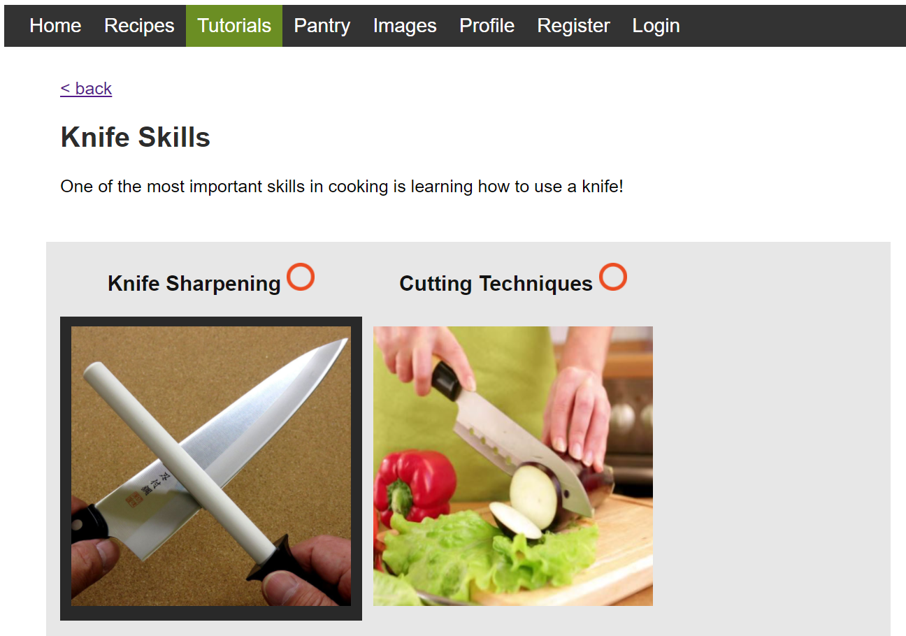
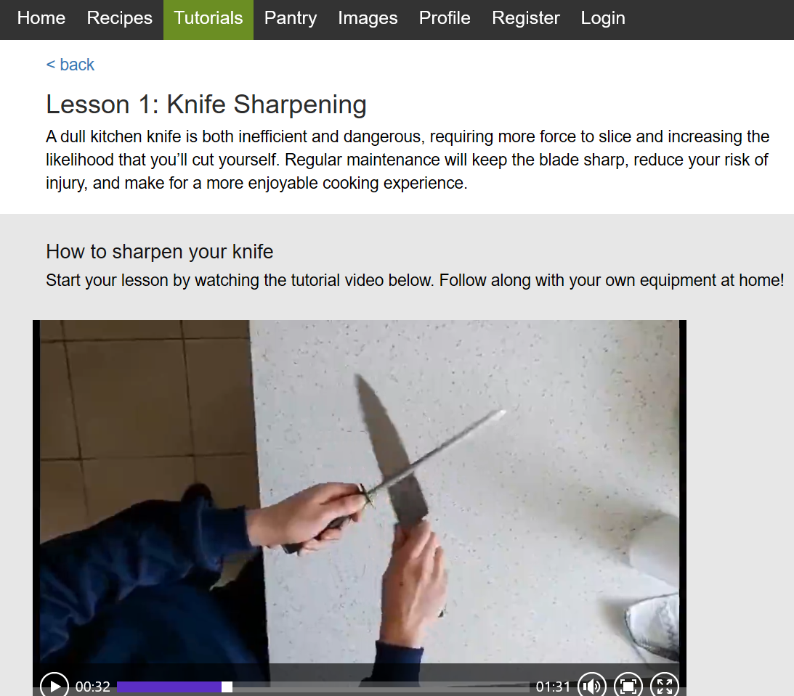
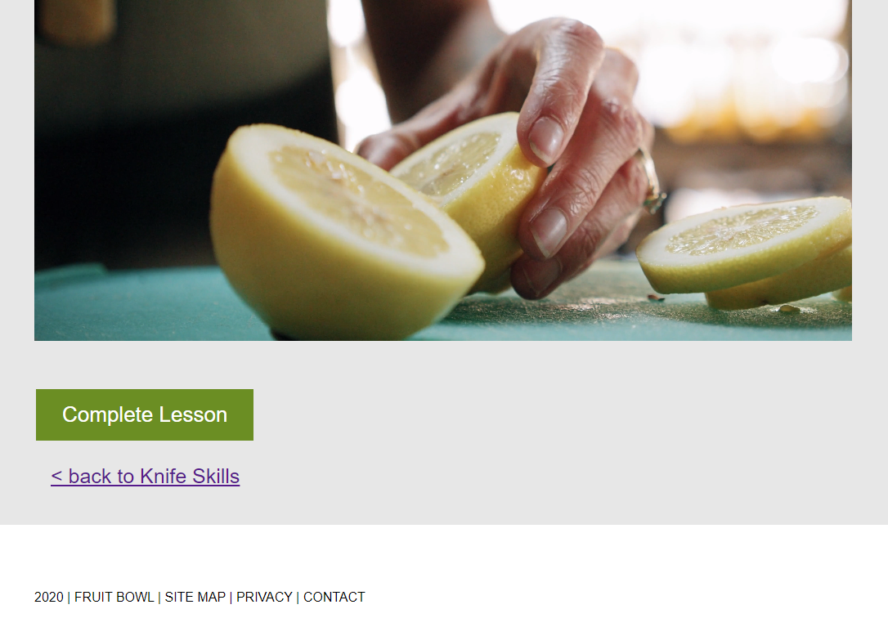
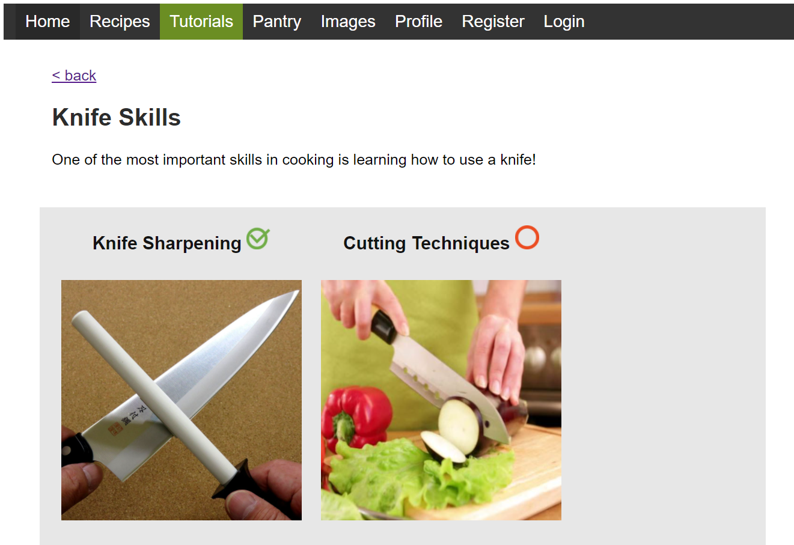

MVF 3: Tutorials
Description
The tutorial feature will provide a library of lessons covering the basics of cooking. These lessons will be primarily video tutorials detailing basic cooking techniques, advice, and equipment management. For example, “How to sharpen knives.”Each video will support a written tutorial, covering these introductory-level cooking skills in more detail and with further explanation. This way, each lesson will include videos, text, images and diagrams.
Further information on more complex cooking skills and videos covering full recipes will be presented via video and website links. Accompanied by a brief description of the content creator.
Outcomes
The tutorial function was succesfully implemented as outlined in the design specs.
However, only one full lesson was added as we didn't have time to create several full lessons with attached demonstartion videos recorded by us.
The following outcomes for the tutorial feature are demonstrated below. So far only the knife sharpening lesson is fully complete.
Here I will demonstrate the tutorial page:
Here is the home page for the tutorials section.

Selecting knife skills takes us to the knife skills tutorial where we see various lessons. As you can see the tutorial is highlighted when hovered over.

Selecting knife sharpening takes us to the knife sharpening lesson. As you can there is a tutorial video recorded by us.

Scrolling through the lesson we can select the 'complete lesson' button to finish this lesson.

Completing the lesson adds a tick at the top to show the lesson has been completed.